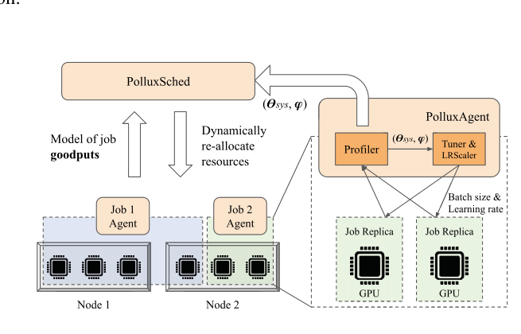
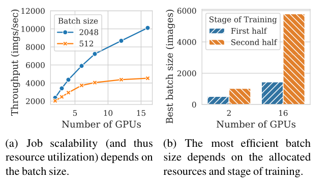
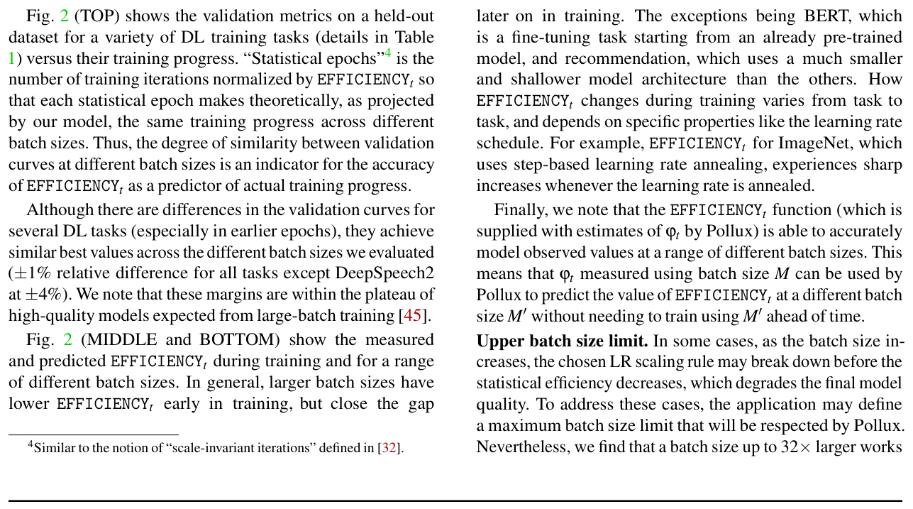
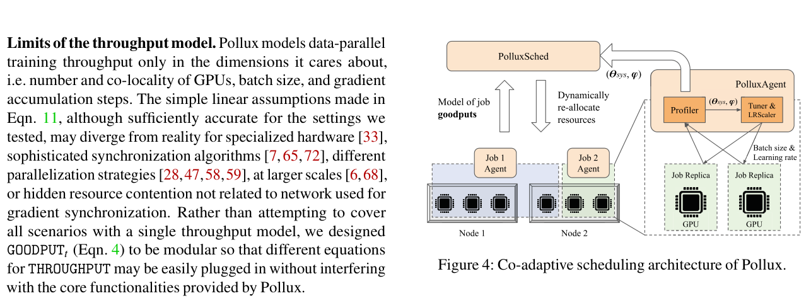
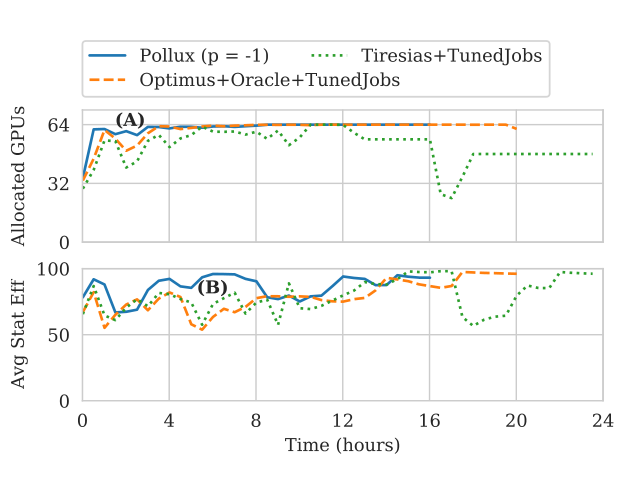
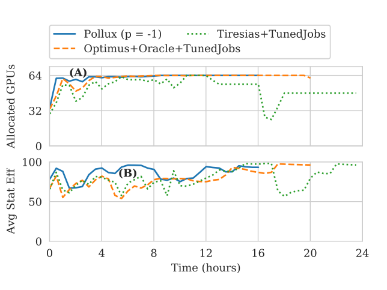
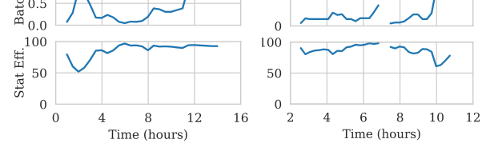
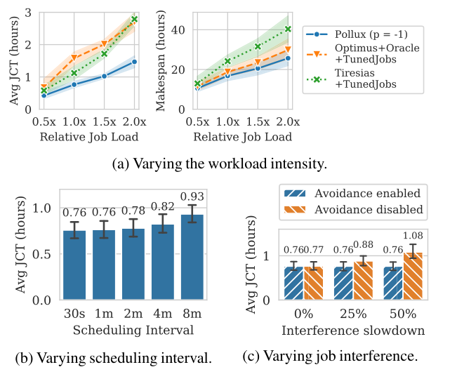
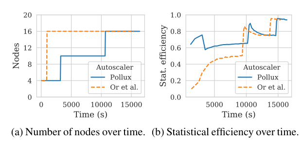
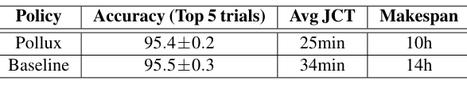

Pollux: Co-adaptive Cluster Scheduling for Goodput-Optimized Deep Learning
This page was written by an AI model to give a high-level overview of the paper. Please check the paper for detail: USENIX.
Shared GPU clusters run deep learning (DL) training jobs that users configure by hand: how many GPUs to request, what batch size to use, what learning rate (LR) to pair with it. Getting these wrong wastes resources or stretches runtimes. Even recent "scale-adaptive" schedulers such as Optimus automatically pick the number of GPUs for a job, but they do so blind to the fact that batch size and LR must change together with the allocation, and that the best choice also shifts as training progresses.
The reason this matters is a genuine tension. System throughput, examples processed per second, rises with batch size because more parallel compute can be used per step. Statistical efficiency, training progress made per example processed, usually falls as batch size grows, governed by a quantity called the gradient noise scale (GNS): a job with low gradient noise gets little benefit from bigger mini-batches, while a job with high noise can absorb much larger batches without losing efficiency. The GNS itself is not fixed; it typically rises during training, sometimes by 10x or more, so the same job can tolerate a far larger batch size late in training than at the start. No prior scheduler (Tiresias, Gandiva, Optimus, Gavel, AntMan, Themis) reasons jointly about resources, batch size and training stage, so none can exploit this trade-off.
Pollux's key idea is to define a single scheduling objective, goodput, as the product of a job's system throughput and its statistical efficiency at its current point in training, and to maximize goodput both inside each job and across the cluster. Because goodput is a real function of the resource allocation, the per-GPU batch size and the number of gradient-accumulation steps, maximizing it automatically finds the combination that makes the most of whatever GPUs a job holds, and tells the scheduler which jobs would most benefit from more of them.
Mechanically, a PolluxAgent runs inside each job, profiles its iteration time and gradient noise online, fits throughput and efficiency models from these measurements, periodically re-picks its batch size and gradient-accumulation steps, and reports its fitted goodput function to a PolluxSched. PolluxSched periodically re-solves a cluster-wide allocation problem that maximizes a fairness-tunable combination of per-job speedups, subject to a penalty for churn (re-allocation requires a checkpoint-restart) and a constraint that keeps competing distributed jobs off the same node to avoid network interference.
On a 64-GPU, 16-node AWS testbed running a workload synthesized from a Microsoft DL cluster trace, Pollux cuts average job completion time (JCT) by 37-50% relative to Optimus and Tiresias even when those baselines are handed manually well-tuned per-job GPU counts and batch sizes, and by 72-73% when the baselines instead get more realistically configured jobs. Pollux also improves finish-time fairness by 1.5-5.4x. In simulation, the same goodput signal drives a cloud auto-scaler that trains ImageNet 25% cheaper than a throughput-based auto-scaler for only 6% longer wall-clock time, and speeds up one hyperparameter-search workload by about 30%.

Key takeaways
- Goodput = throughput × statistical efficiency is Pollux's single scheduling objective; maximizing it jointly picks GPU allocation, per-GPU batch size, gradient accumulation, and (via a plug-in rule) the learning rate.
- Statistical efficiency is estimated online from the gradient noise scale (generalized to adaptive optimizers as the "pre-conditioned gradient noise scale", PGNS), which the paper shows predicts measured efficiency across a wide range of batch sizes without having to actually train at each one.
- Throughput is estimated online by fitting a small closed-form model of per-iteration time to observed (allocation, batch size) pairs, with at most 10% average error across the models tested.
- PolluxAgent (per job) and PolluxSched (cluster-wide) co-adapt: the scheduler decides allocations knowing how well each job can use more GPUs, and each job retunes itself to whatever it is given.
- A single fairness knob p trades cluster-wide goodput against equalizing per-job speedups; the paper recommends p = -1 as a practical default.
From manually-tuned jobs to a goodput-maximizing scheduler
Why throughput and statistical efficiency conflict, how Pollux models and maximizes goodput, and how it co-adapts jobs and clusters.
1 · Background: throughput, efficiency, and why they conflict
Data-parallel SGD replicates the model across K GPUs, splits each mini-batch M into equal per-GPU shares m = M/K, has each GPU compute a local gradient estimate, averages these across GPUs (e.g. with all-reduce), then applies the same update everywhere. Each iteration's time has two parts: Tgrad, the time to compute local gradients (scales with the per-GPU batch size m), and Tsync, the time to average gradients and synchronize parameters (roughly independent of batch size, but sensitive to how many GPUs are used and whether they share a node). By Amdahl's Law, no matter how many GPUs are added, iteration time is lower-bounded by Tsync; the common fix is to raise the batch size so Tgrad dominates Tsync again, which is why larger batches raise system throughput.
The catch is statistical efficiency: progress made per training example processed. Prior work relates this to the gradient noise scale (GNS), the noise-to-signal ratio of the stochastic gradient. A low-GNS job gains little from a bigger batch (each extra example barely sharpens an already-clean gradient estimate); a high-GNS job can absorb a much bigger batch with little loss of efficiency. GNS is not constant: it tends to rise during training, sometimes 10x or more, so late-training batches can be much larger than early-training ones without hurting the final model.

2 · Problem analysis: no single static configuration is right for long
Figure 1 (ResNet18 on CIFAR-10, with the LR separately retuned per batch size) makes both points concrete: a job's scalability, and hence its useful batch size, depends on the resources it has, and the most efficient batch size depends jointly on the allocation and the stage of training. A GPU count and batch size fixed at job submission is therefore likely wrong for most of a job's life in a cluster whose contention and the job's own training stage both keep changing.
3 · Defining goodput
Pollux defines, for any configuration ⋆ (allocation a, per-GPU batch size m, gradient-accumulation steps s):
where M(a,m,s) = SUM(a) × m × (s+1) is the total batch size. EFFICIENCYt is measured relative to the user's initial batch size M0, so it is a fraction in (0,1]; every job starts on a single GPU with M = M0. A plug-in interface, SCALE_LR(M0, M) → λ, lets Pollux scale the learning rate using any rule (AdaScale, square-root scaling, linear scaling, LEGW) without changing its core logic.
4 · Modeling statistical efficiency: the pre-conditioned gradient noise scale
To support adaptive optimizers like Adam and AdaGrad (not just vanilla SGD), Pollux generalizes the GNS to the pre-conditioned gradient noise scale (PGNS), ϕt = tr(PΣPT) / |Pg|², where g is the true gradient, Σ is the per-example gradient covariance, and P is the optimizer's pre-conditioning matrix (for vanilla SGD, ϕt reduces to the ordinary GNS). From this, EFFICIENCYt(M) = (ϕt + M0) / (ϕt + M): intuitively, the fraction of each example's contribution that is still useful progress at batch size M, relative to M0.

Figure 2 validates this across six tasks. Measured against "statistical epochs" (iterations rescaled by EFFICIENCYt), different batch sizes reach similar final validation metrics (within about ±1% for all tasks except DeepSpeech2 at ±4%), and measured versus predicted EFFICIENCYt track closely across a log-scaled range of batch sizes. That means ϕt measured at one batch size can predict efficiency at a different batch size without actually training at it. ϕt itself is estimated from the per-GPU gradient estimates already computed during synchronization when K>1; with a single GPU and no accumulation, Pollux instead uses a differenced-variance estimator across consecutive iterations. Applications may also cap the batch size Pollux will use, since in some cases an LR scaling rule breaks down before efficiency itself degrades much.
5 · Modeling system throughput
Pollux models Tgrad(m) = αgrad + βgrad·m (linear in per-GPU batch size) and Tsync, which is 0 for a single GPU and otherwise a linear function of GPU count K with separate constant/retrogression parameters depending on whether all GPUs sit on one node ("local") or are split across nodes ("node") to capture the cost of cross-node communication. With gradient accumulation over s steps before one synchronization, iteration time is Titer = s·Tgrad + (Tgradγ + Tsyncγ)1/γ, where the fitted exponent γ ≥ 1 interpolates between fully sequential compute/communication (γ=1) and fully overlapped (γ→∞). THROUGHPUT = M/Titer.

Figure 3 shows this model fit (via L-BFGS-B minimizing root-mean-squared-logarithmic-error) against measured iteration times and throughputs for all six evaluated models; across a diverse set of GPU placements and batch sizes on a 64-GPU cluster, average fitted error was at most 10%.
6 · PolluxAgent: fitting models and retuning a job in place
PolluxAgent is a Python library imported into the training script (integrated with PyTorch's all-reduce synchronization). It profiles per-iteration time and gradient statistics, periodically refits the throughput parameters and ϕt, then solves for the (m*, s*) that maximize GOODPUTt under the job's current allocation and applies the corresponding LR via the plug-in scaling rule. Because a new job has no throughput history yet, PolluxAgent starts with priors that assume perfect scaling (zeroing the retrogression parameters until the job has actually used more GPUs/nodes), which nudges PolluxSched to try giving it more resources; to bound the risk of this exploration, a job's allocation is capped at twice the most GPUs it has ever used.
7 · PolluxSched: cluster-wide allocation
- Fitness function. PolluxSched maximizes FITNESSp(A), a generalized (power) mean across per-job speedups, where SPEEDUPj is job j's best-achievable goodput under its candidate allocation divided by its best-achievable goodput under an equal, 1/J-of-the-cluster "fair" allocation.
- Fairness knob p. p = 1 averages speedups (favors jobs that scale well); as p → -∞, FITNESSp approaches the minimum speedup, pushing toward equal speedups for every job regardless of cluster-wide goodput. p is exposed as an operator-set knob; the paper's experiments favor p = -1.
- Re-allocation penalty. Every re-allocation needs a checkpoint-restart (15-120s measured, depending on model size). PolluxSched discounts a job's speedup by a REALLOC_FACTOR based on its historical re-allocation rate and an estimated restart delay, so churn-prone jobs are penalized more for further churn.
- Interference avoidance. Co-located distributed jobs can slow each other's network traffic by up to 50% (per prior measurements). PolluxSched's search enforces that at most one distributed (multi-node) job occupies any given node.
- Search. A population-based search perturbs and combines candidate allocation matrices, enforcing per-node resource limits and the interference constraint, and applies the best-scoring matrix by creating/terminating Kubernetes Pods.
- Non-adaptive jobs. A user who wants a fixed batch size can pin EFFICIENCYt = 1 for that job; PolluxSched still adapts its GPU allocation using THROUGHPUT alone.
8 · Implementation
PolluxAgent fits its throughput parameters roughly every 30 seconds (about 0.2s of compute each time) and solves for the optimal (m, s) in about 0.4 milliseconds. PolluxSched runs as a Kubernetes (1.18.2) service on a 60-second scheduling interval, uses CephFS to store checkpoints for checkpoint-restart elasticity, and in the testbed experiments spent about 1 vCPU-second per interval on its search, with jobs re-allocated on average once every 7 minutes and an average 8% run-time overhead from checkpoint-restarts. Results from this implementation are covered in the Evaluation tab.
Evaluation
Testbed macrobenchmarks against two prior DL schedulers, plus trace-driven simulator studies of fairness, sensitivity, cloud auto-scaling and hyperparameter search.
Pollux is evaluated two ways: testbed macrobenchmarks on a real 64-GPU cluster running a synthetic workload derived from a Microsoft DL cluster trace, compared against two prior DL schedulers; and a trace-driven cluster simulator (built from measured per-model throughput and gradient-noise data) used for broader sensitivity studies, fairness analysis, cloud auto-scaling, and hyperparameter-optimization (HPO) experiments.
| What | Value in the paper |
|---|---|
| Platform | 16 nodes, 64 GPUs; each node an AWS EC2 g4dn.12xlarge (4 NVIDIA T4 GPUs, 48 vCPUs, 192GB RAM, 900GB SSD), same placement group; Kubernetes 1.18.2; CephFS for checkpoints |
| Workloads | 160 jobs sampled from the busiest 8-hour window of the Microsoft cluster trace, replayed with 6 model/dataset combinations (ImageNet/ResNet-50, PASCAL-VOC/YOLOv3, CMU-ARCTIC/DeepSpeech2, SQuAD/BERT fine-tune, CIFAR-10/ResNet18, MovieLens/NeuMF), categorized Small/Medium/Large/XLarge by GPU-time (Table 1) |
| Baselines | Tiresias (fixed GPU count, two priority queues); Optimus+Oracle (adapts GPU count via a throughput model, given the true number of iterations to convergence); each run with manually "well-tuned" and with more realistic job configurations |
| Metrics | Average and 99th-percentile (tail) job completion time (JCT), makespan, finish-time fairness ρ |
Pollux cuts job completion time even against well-tuned baselines

What it shows. Table 2 lists average JCT, tail (99th percentile) JCT, and makespan for Pollux at three fairness-knob settings against Optimus+Oracle and Tiresias, each run with manually well-tuned job configurations ("+TunedJobs") and with their own untuned defaults. Pollux (p=-1): 0.76h average JCT, 11h tail JCT, 16h makespan. Optimus+Oracle+TunedJobs: 1.5h / 15h / 20h. Tiresias+TunedJobs: 1.2h / 15h / 24h. Optimus+Oracle (untuned): 2.7h / 22h / 28h. Tiresias (untuned): 2.8h / 25h / 31h. Pollux p=+1: 0.83h / 10h / 16h. Pollux p=-10: 0.84h / 12h / 18h.
What to take from it. Even when the baselines are handed near-ideal, manually-tuned GPU counts and batch sizes, a setting the paper notes strongly favors them, Pollux still achieves 50% and 37% shorter average JCT than Optimus+Oracle+TunedJobs and Tiresias+TunedJobs respectively, because it keeps retuning batch size and allocation as cluster contention changes, which a fixed tuned configuration cannot do. Against more realistically configured baselines (GPU count taken directly from the trace, batch size = M0 × GPU count), the gap widens to 72% and 73% shorter average JCT over Optimus+Oracle and Tiresias. The paper separately reports, via a finish-time-fairness CDF, that Pollux at p=-1 gets 99% of jobs to ρ<2, a 1.5-5.4x improvement in fairness over the baselines.
Pollux trades throughput for efficiency as cluster contention changes

What it shows. Figure 5 plots, over the course of the synthetic workload, the cluster-wide average number of allocated GPUs (top) and average statistical efficiency (bottom) for Pollux (p=-1), Optimus+Oracle+TunedJobs, and Tiresias+TunedJobs. Labeled points (A) and (B) mark periods of low and high contention. Tiresias+TunedJobs dips between hours 16 and 20 because a 24-GPU job blocks a pending 48-GPU job from running.
What to take from it. During low contention, Pollux allocates more GPUs cluster-wide and runs larger, less statistically efficient batches to raise throughput (point A); during high contention it shifts toward smaller batches with higher statistical efficiency to make better use of scarce GPUs (point B). This is the goodput trade-off operating at cluster scale, complementing the single-job view in Result 3. Tiresias's rigid, fixed GPU allocations can leave high-value jobs queued, producing its visible stall.
Individual jobs are re-tuned as resources and training stage change

What it shows. Figure 6 tracks one ImageNet job (left) and two YOLOv3 jobs (right) over time under Pollux (p=-1), stacked in four rows: number of jobs sharing the cluster, GPUs allocated, batch size used, and statistical efficiency. For ImageNet: at low contention (A) more GPUs and a larger batch size are used, lowering efficiency; at high contention (B) fewer GPUs and a smaller batch size raise efficiency; when contention eases again (C), more GPUs and an even larger per-GPU batch size are used than at (A). The YOLOv3 jobs show analogous behavior.
What to take from it. The same mechanism responds to two distinct signals, cluster contention and training progress, and tells them apart: the large batch size at point (C) is not penalized the way the same batch size would be early in training, because by then the job's fitted efficiency model already reflects a higher measured gradient noise scale (the job is in a later, more batch-size-tolerant phase).
The advantage holds across load levels, scheduling intervals and interference

What it shows. Figure 8 (simulator), with 95% confidence-interval error bars/bands, has three panels: (a) average JCT and makespan for Pollux and the two tuned baselines across increasing job-submission rates; (b) average JCT for Pollux across a range of scheduling-interval lengths; (c) average JCT for Pollux with and without interference avoidance, across injected levels of co-location network slowdown.
What to take from it. Pollux maintains a similar relative advantage over the baselines as load increases. Its average JCT is stable for scheduling intervals up to about 2 minutes but degrades for longer ones (the paper attributes roughly half of that degradation to longer job-queuing delay and the rest to staler allocations). With interference avoidance enabled, average JCT is essentially unaffected even by severe injected slowdowns; without it, a 50% interference slowdown makes average JCT 1.4x longer, while in the zero-interference case the two settings perform about the same, i.e. the constraint costs little when it is not needed.
Goodput-based auto-scaling trains ImageNet 25% cheaper

What it shows. Figure 9 compares a simple Pollux-goodput-driven cloud auto-scaler (scale out when projected per-GPU goodput exceeds two-thirds of the ideal perfectly-scaled value, up to where it is about one-half of ideal) against a throughput-based auto-scaler from Or et al., both training ImageNet. Panel (a) shows number of nodes over time; panel (b) shows statistical efficiency over time. The throughput-based policy scales out to many nodes and a large batch size almost immediately and holds this fixed; Pollux starts with few nodes and increases node count gradually as training progresses.
What to take from it. Because throughput does not change with training progress but statistical efficiency does, the throughput-only policy commits to a large batch size before it is actually efficient to do so, while Pollux's goodput signal defers scaling out until later training can use the extra resources without losing efficiency. Net effect on this one workload: 25% cheaper for only 6% longer completion time. The paper frames this explicitly as preliminary evidence of an opportunity, not a complete auto-scaler design.
The same goodput signal also speeds up hyperparameter search

What it shows. Table 3 summarizes an HPO run tuning a ResNet18/CIFAR10 model with the Tree-structured Parzen Estimator (TPE), 4 concurrent trials, 100 trials total, on two 8-GPU DGX A100 nodes. Pollux reaches 95.4±0.2% top-5 accuracy on the top trials with a 25-minute average JCT and a 10-hour makespan; a baseline that statically assigns 4 GPUs on one node and a fixed per-GPU batch size per trial reaches 95.5±0.3% accuracy with a 34-minute average JCT and a 14-hour makespan.
What to take from it. Pollux reaches statistically indistinguishable accuracy roughly 30% faster in both average JCT and makespan, purely from adaptively (re-)allocating GPUs and batch sizes across concurrently running trials. The paper notes that a full study of how Pollux interacts with different HPO algorithm families (Bayesian optimization versus bandit-based early stopping) is left to future work.
FAQ
Q·What does "goodput" mean, and how is it different from throughput?▾
Throughput is examples processed per second; goodput is throughput multiplied by statistical efficiency, the fraction of each example's contribution that is actually useful training progress at the current batch size. A configuration can have high throughput but low goodput if it processes many examples inefficiently (too large a batch for the model's current gradient noise).
Q·Why can't a user just pick good settings up front?▾
The best GPU count, batch size and learning rate depend on how much the cluster can currently spare and on how far training has progressed (a model typically tolerates much larger batches later in training). Both change while the job runs, so a setting chosen at submission time is likely to become wrong partway through, especially in a shared, contended cluster.
Q·How does Pollux know the gradient noise scale without a separate validation run?▾
It estimates the pre-conditioned gradient noise scale (PGNS) online from the gradient estimates already computed on each GPU during normal training (or, on a single GPU, from the difference between consecutive gradient estimates). No extra training runs or held-out sweeps are needed; the paper validates that this estimate predicts measured efficiency at other batch sizes it hasn't actually trained at.
Q·How is Pollux different from Optimus, Gavel, AntMan, or Themis?▾
Those schedulers are "scale-adaptive" at most: Optimus adapts GPU count using a throughput model, Gavel compares throughput across accelerator types, AntMan does fine-grained GPU sharing, and Themis targets finish-time fairness. None of them models or adapts batch size and learning rate jointly with resource allocation, and none accounts for statistical efficiency. Pollux's goodput formulation folds all of these inter-dependent factors into one objective.
Q·Why does a larger batch size reduce statistical efficiency?▾
A mini-batch's gradient is a noisy estimate of the true gradient over the whole dataset. When the per-example gradients already agree closely (low gradient noise scale), adding more examples to the batch barely sharpens the estimate, so each additional example contributes less marginal progress. When gradients disagree a lot (high noise scale), more examples meaningfully reduce the noise, so a bigger batch stays efficient.
Q·What is gradient accumulation, and why does Pollux use it?▾
Gradient accumulation computes and locally sums gradients over several forward-backward passes before synchronizing across GPUs once, which increases the effective total batch size without needing more GPU memory per step. Pollux uses it to reach a target batch size when the number of allocated GPUs is too small (or GPU memory too limited) to reach that batch size through data parallelism alone.
Q·What happens when a job is re-allocated to different GPUs mid-training?▾
Pollux uses checkpoint-restart: the job checkpoints its state, is torn down on its old GPUs, and restarts on the newly allocated ones, which the testbed measured at 15-120 seconds of delay depending on model size. Because this has a real cost, PolluxSched penalizes allocations that would require re-allocating a job that has already been re-allocated often, to avoid excessive churn.
Q·What does the fairness knob p actually control?▾
p sets the exponent in the generalized mean of per-job speedups that PolluxSched maximizes. At p=1, it maximizes the average speedup across jobs, which favors jobs that scale well with more GPUs. As p becomes more negative, it increasingly prioritizes equalizing speedups across jobs (approaching max-min fairness as p→-∞), at some cost to overall cluster goodput. The paper's experiments use p=-1 as a practical balance.
Q·Does Pollux require changing your training code?▾
A user integrates PolluxAgent as a library (the paper's implementation targets PyTorch with all-reduce synchronization) and supplies an initial batch size and a learning-rate-scaling rule via the plug-in interface. Beyond that, the job's training code does not need to manage its own GPU count, batch size or learning rate; Pollux retunes them automatically as it runs.
Q·Why does Pollux avoid putting multiple distributed jobs on the same node?▾
Distributed jobs synchronize gradients over the network, and the paper cites prior measurements of up to 50% slowdown when two distributed jobs share a node's network. PolluxSched's search explicitly constrains allocations so at most one distributed (multi-node) job occupies any given node; the paper's sensitivity study (Result 4) shows this constraint costs little when interference is absent but protects performance when it is present.
Q·Is Pollux's throughput model accurate for every kind of DL training?▾
The paper reports at most 10% average fitting error across the six models it tested, covering standard synchronous data-parallel training. It explicitly flags that the model's simple linear assumptions may not hold for specialized accelerators, more sophisticated synchronization schemes, other parallelization strategies (pipeline, model, tensor parallelism), very large scale, or contention unrelated to gradient synchronization; it designed the goodput formulation so a different throughput model could be substituted for those cases.
Q·How does Pollux decide the learning rate when it changes the batch size?▾
Through a plug-in interface, SCALE_LR(M0, M) → λ, that any LR-scaling rule can implement, including AdaScale, square-root scaling, linear scaling, or LEGW. Pollux calls this before every model update to scale the learning rate to match whatever batch size it has currently chosen; it does not hard-code a single scaling rule.
Q·Is Pollux available to use?▾
The paper states Pollux is implemented and publicly available as part of an open-source project (the AdaptDL project on GitHub, as named in the paper), along with the testbed experiment scripts and cluster simulator used in the evaluation.